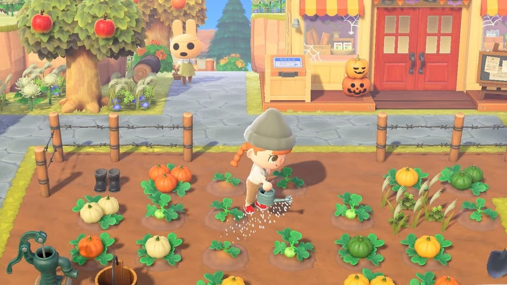

Todos los detalles de la actualización de aniversario de Animal Crossing
Conejito malvado.

Aunque parezca mentira que ya haya pasado un año, Animal Crossing está preparando ahora mismo su actualización de primavera, que conmemora el lanzamiento del juego a finales de marzo del año 2020. La actualización contiene nuevas opciones, nuevos objetos, y lo que los jugadores más temían: el regreso de la caza del Huevo.
La caza del huevo y Coti Conejal, el conejo saltarín, serán el primer evento temporal que se repita en la historia de Animal Crossing: New Horizons. Durará desde el día 28 de marzo hasta el 4 de abril, y añadirá algunos objetos nuevos a la ya conocida dinámica de la búsqueda del huevo. En esta ocasión, los objetos especiales podrán comprarse a través del MiniNook. Es más que probable que Nintendo haya tomado esta decisión teniendo en cuenta la respuesta recibida en el evento del año pasado, donde los usuarios consideraban que el número de huevos que aparecían cuando pescábamos, talábamos árboles o explotábamos globos era demasiado elevado.
La actualización llegará el jueves, 18 de marzo, y además añadirá nuevas opciones dentro de los menús de New Horizons.
Al descargar la actualización se añadirá la opción de añadir diseños personalizados a paraguas, paipays, banderines y paneles de fotos. Además, se ha ampliado la capacidad de almacenamiento de diseños personalizados hasta 50, tanto en el modo normal como en el profesional. Además, ahora podremos acceder al Portal de diseños personalizados desde nuestro Nookófono, en lugar de tener que ir hasta la tienda de las Hermanas Manitas.